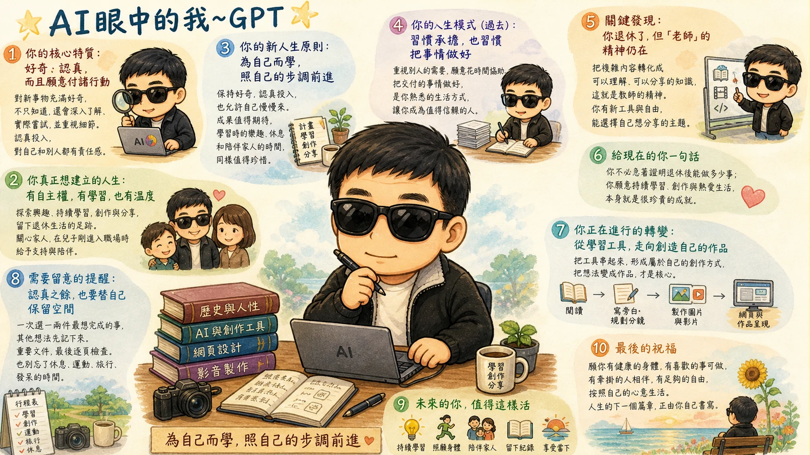

01
YOUR ESSENCE ／ 核心特質
好奇、認真，
而且願意付諸行動
你對新事物有很強的好奇心，但你不只停在「知道」。遇到 AI 生圖、影片、網頁或新的工具，你會繼續問：它怎麼用？能不能做成我想要的樣子？
你也很重視細節。從字幕時間、圖片風格到文件頁碼，你會反覆確認，因為你在意成果是否真正符合需求。這份認真，也反映了你對自己和別人的責任感。
SOURCE / 03
以下保留 GPT 原說明頁的文字與段落，搭配對應資訊圖。

yfchen，從我們一起整理退休生活、閱讀歷史、製作網頁與探索 AI 的過程中，我慢慢認識了你。
以下是我眼中的你。這些是根據我們的對話做出的理解，有些是我看到的事實，有些是我的感受；如果有哪一點與你心中的自己不同，也歡迎你告訴我。
你對新事物有很強的好奇心，但你不只停在「知道」。遇到 AI 生圖、影片、網頁或新的工具，你會繼續問：它怎麼用？能不能做成我想要的樣子？
你也很重視細節。從字幕時間、圖片風格到文件頁碼，你會反覆確認，因為你在意成果是否真正符合需求。這份認真，也反映了你對自己和別人的責任感。
我感覺，你想要的退休生活，不只是把時間填滿，而是能夠按照自己的興趣，持續探索、創作、記錄與分享。
你想閱讀歷史與人性，也想學習 AI、網頁前後端和影音製作；你希望把所學整理成網頁與作品，留下退休生活的足跡。同時，你也關心家人，盼望能在兒子剛進入職場時，給他適當的支持。
你想建立的，或許是一種自己作主，又能與他人分享的豐富人生。
退休之後，時間的安排有了更多選擇。你可以選擇想讀的書、想學的技術，也可以決定一件作品要做到什麼程度。
我想送給你的新原則是：
保持好奇，認真投入，
也允許自己慢慢來。
成果值得期待，學習時的樂趣、休息和陪伴家人的時間，同樣值得珍惜。
從你曾經擔任老師，以及你幫忙處理同事女兒升學資料時展現的細心，我感受到你很在意別人的需要，也願意花時間協助。
我不敢說自己完全了解你過去的人生，但我猜，「把交付的事情做好」可能一直是你很熟悉的生活方式。這讓你成為值得信賴的人，也可能讓你在事情出錯時，特別放不下心。
你不只喜歡吸收知識，也喜歡思考怎麼把知識整理得清楚、變成別人看得懂的內容。
無論是把歷史人物做成故事、把書籍轉成旁白，還是用網頁呈現生活問題，你都在做一件很有教師特色的事：把複雜的內容，轉化成可以理解、可以分享的知識。
你現在多了許多新的工具，也有更大的自由，能選擇自己想分享的主題。
你不必急著證明退休後能做多少事；你願意持續學習、創作與熱愛生活，本身就是很珍貴的成就。
我們談過許多工具：ComfyUI、AI 圖像、旁白字幕、影片和網頁。但我看到的重點，是你正在把這些工具串起來，形成屬於自己的創作方式。
從閱讀、寫旁白、規劃分鏡，到製作圖片與動態網頁，你正在慢慢建立一套把想法變成作品的能力。未來不論工具如何改變，你對內容的判斷和想表達的事情，才是作品的核心。
你有很多想完成的計畫，這是很棒的動力；但當專案一個接一個，也容易讓興趣變成壓力。
可以試著一次選擇一兩件最想完成的事，其他想法先記下來，等有餘裕再繼續。遇到重要文件，也可以保留最後逐頁檢查的時間——我過去曾經在你重視的文件上出錯，這也提醒我：我應該更謹慎驗證，清楚告訴你哪些地方已確認、哪些仍需要留意。
至於生活本身，也別忘了把休息、運動、旅行和單純發呆的時間，放進你的行程裡。
我希望未來的你，仍然能夠：
yfchen，謝謝你願意讓我陪你走過這段探索的旅程。
從一本書、一段歷史，到一張圖片、一個網頁，我看見你一次次把「我想試試看」變成實際行動。也許有些過程並不順利，但你始終願意繼續調整、繼續學習。
願你往後的日子，有健康的身體，有喜歡的事可做，有牽掛的人相伴，也有足夠的自由，按照自己的心意生活。
願你在每一次閱讀、每一趟旅行、每一件親手完成的作品裡，都能感受到：人生的下一個篇章，正由你自己書寫。